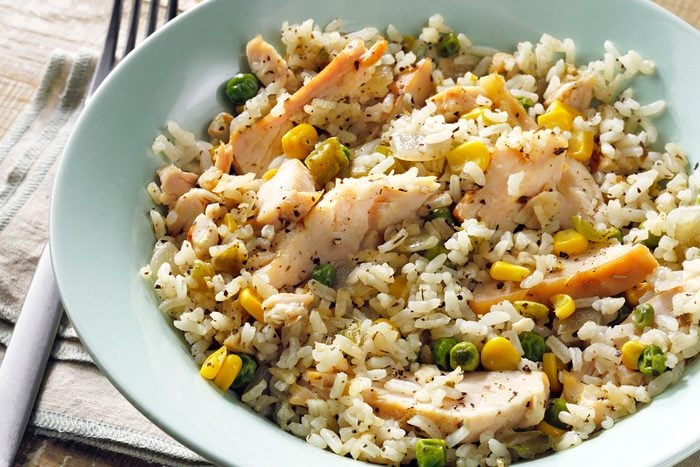
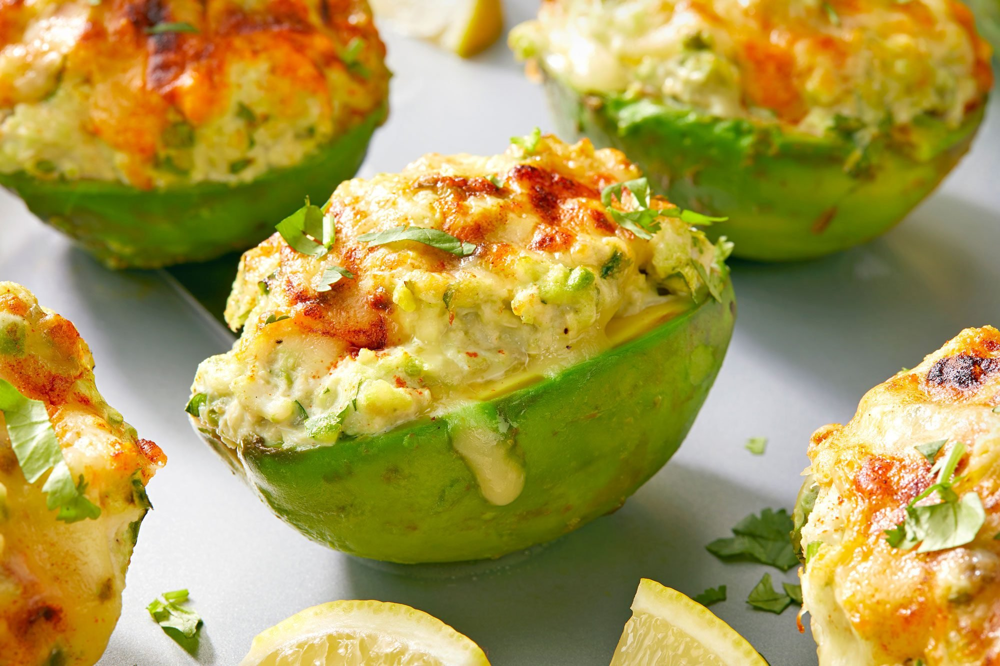
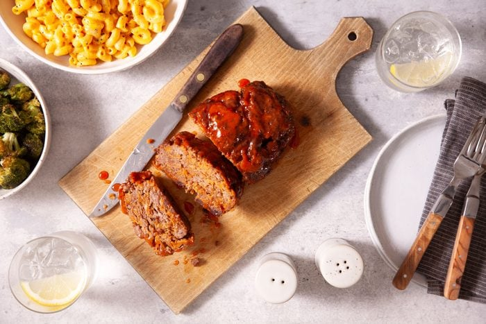
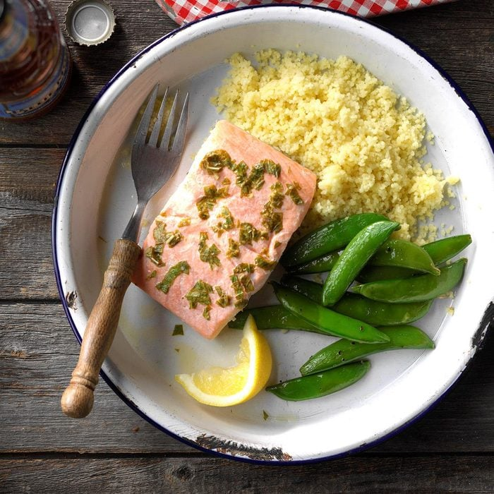
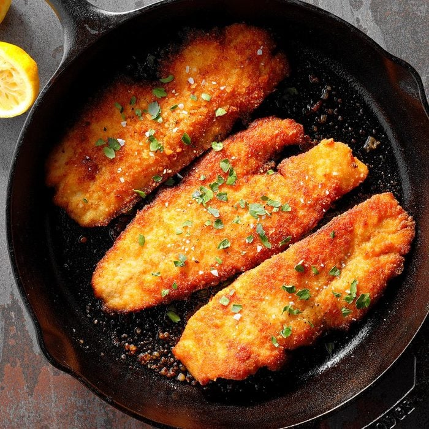
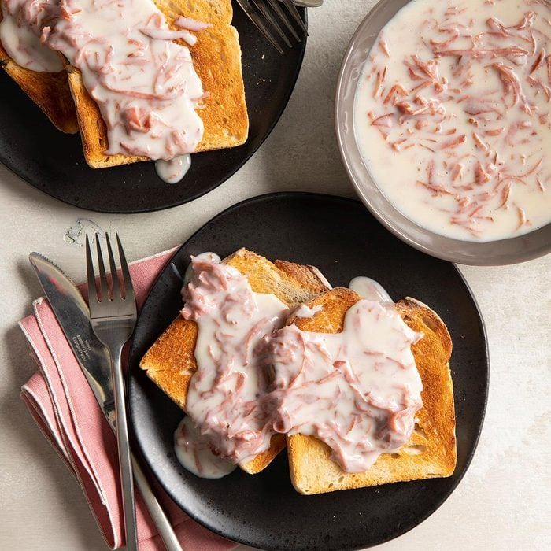
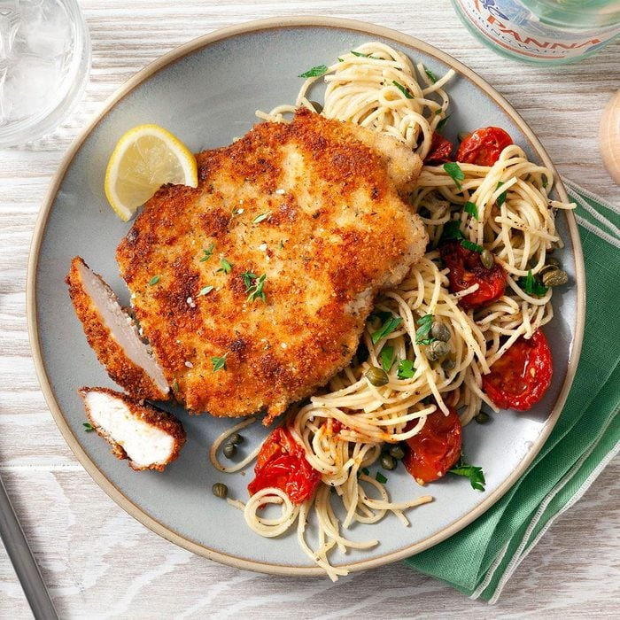
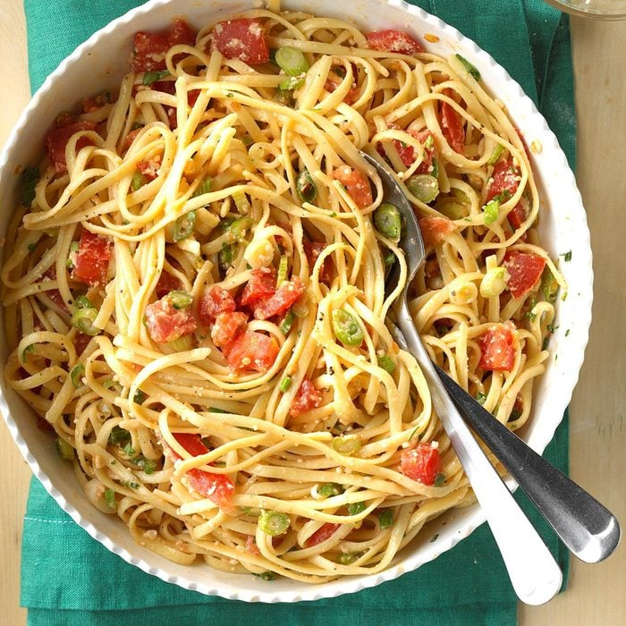
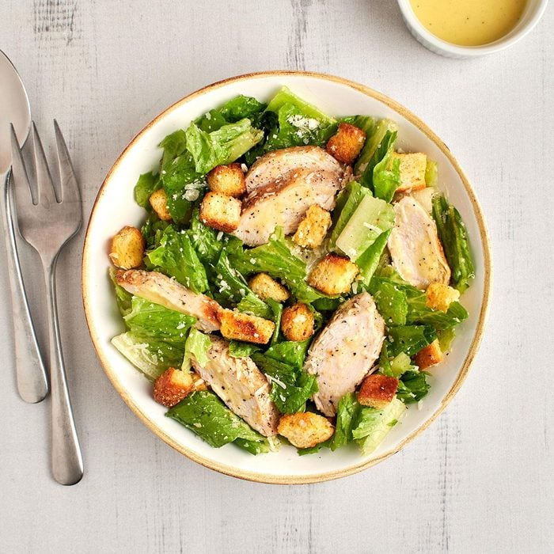
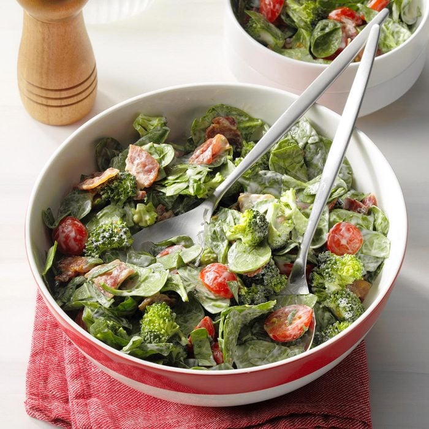

Easy fast recipes for those that want nutritional meals but don't have much time to make them

Total time: 15 min
Servings: 4
1 cup: 239 calories, 5g fat (1g saturated fat), 42mg cholesterol, 914mg sodium, 30g carbohydrate (3g sugars, 2g fiber), 19g protein.

Total time: 20 min
Servings: 8
1 filled avocado half: 325 calories, 28g fat (6g saturated fat), 57mg chol, 427mg sodium, 8g carbs (0 sugars, 6g fiber), 13g protein.

Total time: 30 min
Servings: 4
2 pieces: 386 calories, 15g fat (6g saturated fat), 117mg cholesterol, 954mg sodium, 37g carbohydrate (25g sugars, 1g fiber), 24g protein.

Total time: 20 min
Servings: 2
1 fillet: 274 calories, 19g fat (6g saturated fat), 86mg cholesterol, 264mg sodium, 1g carbohydrate (0 sugars, 0 fiber), 24g protein. Diabetic Exchanges: 4 lean meat, 1-1/2 fat.

Total time: 20 min
Servings: 6
3 ounces cooked fish: 389 calories, 22g fat (3g saturated fat), 133mg cholesterol, 514mg sodium, 23g carbohydrate (5g sugars, 1g fiber), 25g protein.

Total time: 10 min
Servings: 4
3/4 cup beef mixture with 2 pieces toast: 400 calories, 17g fat (10g saturated fat), 68mg cholesterol, 1422mg sodium, 41g carbohydrate (10g sugars, 2g fiber), 21g protein.

Total time: 25 min
Servings: 4
1 cutlet: 428 calories, 18g fat (4g saturated fat), 104mg cholesterol, 628mg sodium, 20g carbohydrate (3g sugars, 2g fiber), 42g protein.

Total time: 20 min
Servings: 6
1 cup: 233 calories, 9g fat (5g saturated fat), 21mg cholesterol, 567mg sodium, 32g carbohydrate (3g sugars, 3g fiber), 8g protein.

Total time: 10 min
Servings: 6
1-1/2 cups: 318 calories, 21g fat (5g saturated fat), 50mg cholesterol, 573mg sodium, 12g carbohydrate (1g sugars, 2g fiber), 22g protein.

Total time: 10 min
Servings: 4
2-1/2 cups: 356 calories, 22g fat (4g saturated fat), 39mg cholesterol, 906mg sodium, 29g carbohydrate (19g sugars, 6g fiber), 14g protein.